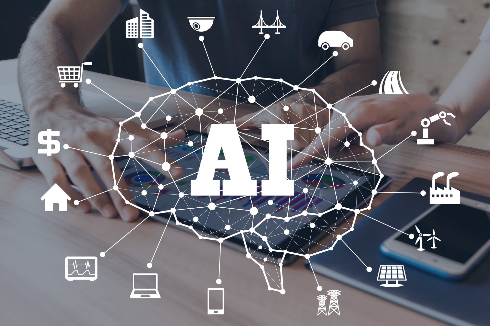

The average enterprise runs 45 cybersecurity-related tools on its network.1 With more tools comes more complexity,
and complexity creates security gaps. Zero Trust creates an opportunity to rebuild security in a way that meets digital
transformatiBecause of COVID-19, organizations are adjusting to a rise in remote work and the key driver of
digital transformation activities has been cybersecurity. Not only is cybersecurity the motive for digital transformation,
but the benefits of the cloud, data processing, and more innovative network technology are also made clear. Among
the major challenges for IT leaders is the need to adapt to the digital culture, automate business processes, and choose
the right cloud strategy.
According to Accenture Research, “AI is the collection of multiple technologies that allow machines to detect, understand, act and learn either on their own or to augment human activities”. They will have many of the capabilities of a human being – the ability to learn and distinguish between things. But they also have a great advantage over humans – they do not need to rest to function! The same Accenture study reveals that AI could double annual economic growth rates by 2035 by changing the nature of work and create a new relationship between Man and Machines, increasing labor productivity by up to 40%.
Artificial Intelligence (AI) is already present in many of the services we use every day, even when we may not be aware of them. For example, when Amazon suggests products you might want to buy, it is using a system based on AI to suggest a product based on your previous purchases and what other people have bought after buying what you are buying (Suggested Products). AI is beginning to mature to the point where it can learn without human interactions.
AI tools are becoming an integral part of many organizations, both in the public and private sectors. It is being applied to help in the improvement of performance of Government agencies, in their service levels and accountability and develop solutions focused on the well-being of Citizens.

Artificial Intelligence is not something new. To trace the origins of this concept that sounds so innovative, we have to go back to the year 1956. During the summer of 1956, a group of scientists met in the University of Dartmouth, New Hampshire and coined the term ‘Artificial Intelligence (AI)’. These researchers worked for two months with a clear objective: to find a way to introduce the behaviors of human rational logic into machines. 62 years have passed and there has been many investigations, some successes and some failures, in the effort to get machines to think like humans.
.jpg)